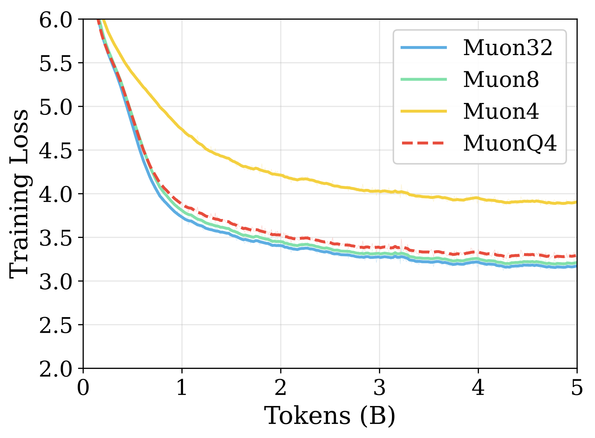
GPT-2 Medium
MuonQ
A pure 4-bit training framework for the Muon optimizer — matching full-precision quality while cutting optimizer-state memory by up to 7.3×.
1 University of California, Santa Barbara · {yupengsu, zzhang01}@ucsb.edu
The Muon optimizer is a compelling alternative to Adam for training LLMs, achieving large compute savings through gradient orthogonalization. But Muon's state is unusually sensitive to quantization: orthogonalization discards singular-value magnitudes and keeps only directional information, so tiny errors in singular-vector directions get amplified into the update.
MuonQ is a low-bit Muon framework built on directional fidelity optimization — three complementary techniques that together enable stable pure 4-bit quantization of Muon's optimizer states, recovering most of full-precision Muon's loss and downstream accuracy while cutting optimizer-state memory by up to 7.3×.
Unit-normalize before quantizing so every step injects equal-magnitude error — no preferred direction accumulates.
Quantize the singular factors separately, so errors rescale singular components instead of rotating their directions.
Reallocate quantization bins toward the dense near-zero region where distinguishability matters most.
Muon's polar step maps every singular value to one, so only the error component that rotates singular vectors survives. MuonQ therefore targets the cosine similarity of the momentum, not its reconstruction error — attacking directional error at three stages of a single training step.
Gradient and momentum norms swing across steps, so per-step quantization error swings too — and accumulates into an anisotropic drift the polar step is sensitive to. Normalizing both to unit Frobenius norm before quantizing makes every step inject equal-magnitude, isotropic error that never develops a preferred direction.
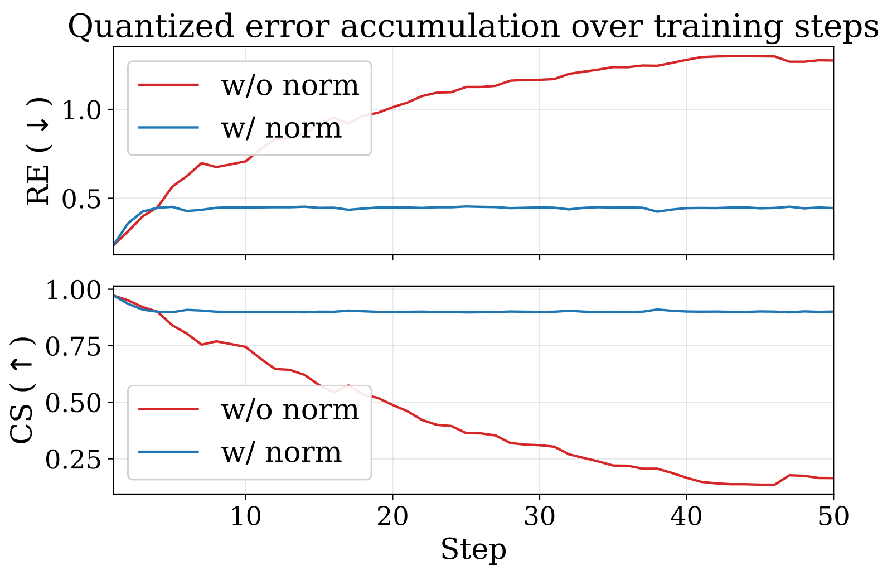
Orthogonalization amplifies directional error. MuonQ decomposes momentum via truncated top-k SVD (warm-started power iteration) and quantizes each factor separately — left singular vectors column-wise, scaled right vectors row-wise. Each singular direction becomes its own quantization group, so errors only rescale singular components rather than rotating them, and the polar step absorbs them.
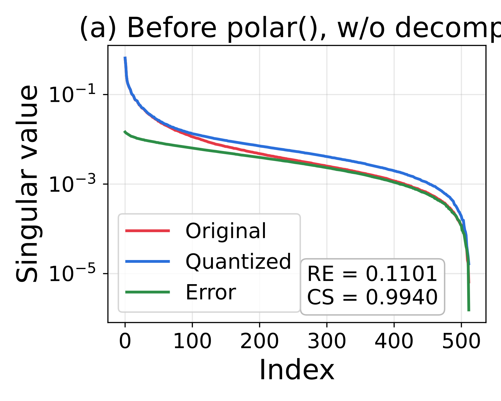
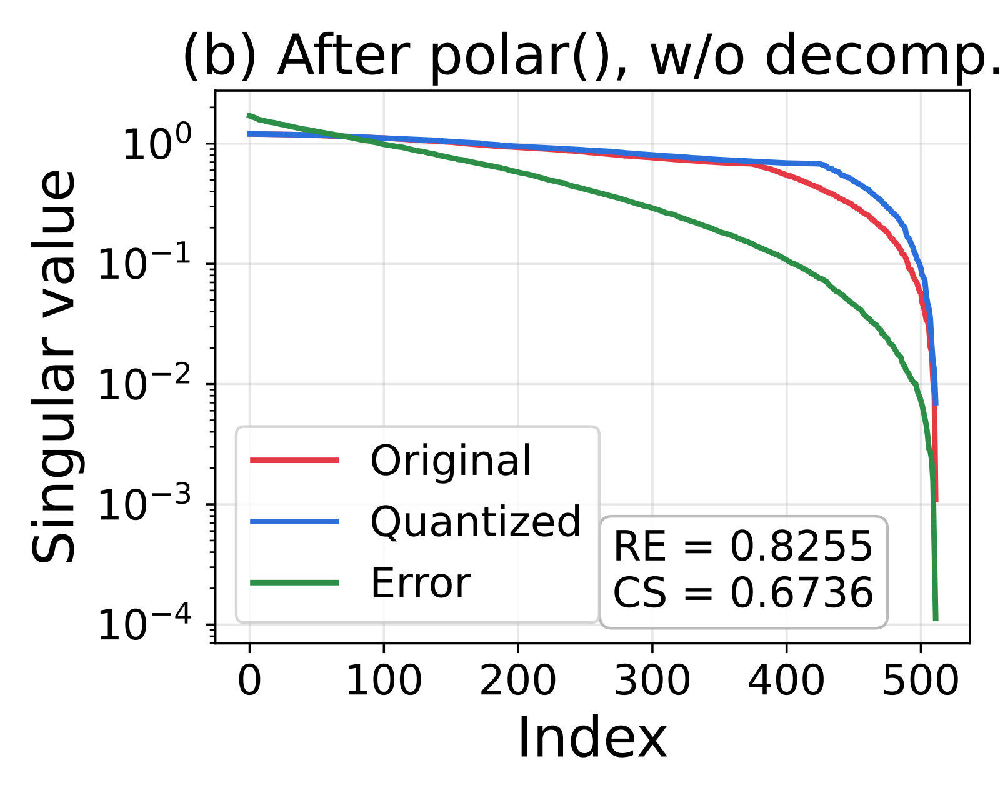
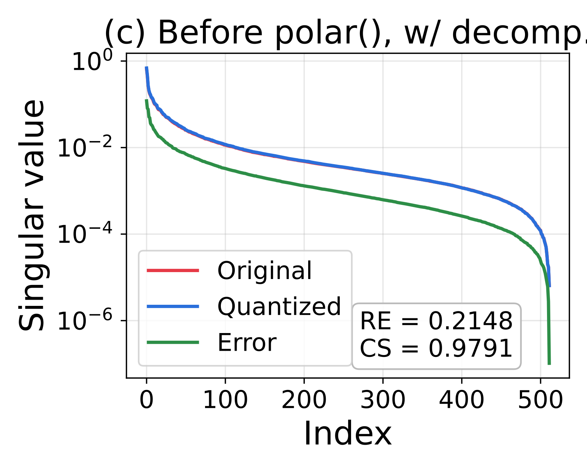
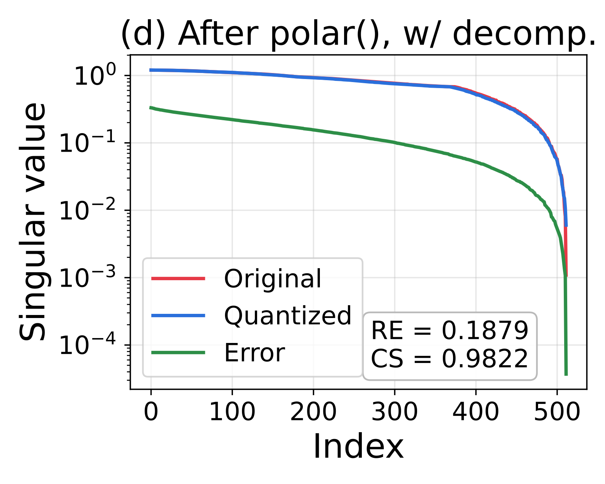
Because Muon weights all singular directions equally, resolution near zero — where momentum values pack densely — matters more than preserving outliers. MuonQ applies μ-law companding (μ = 255) to reallocate quantization bins toward this dense central region, shifting the objective from outlier preservation to dense-region distinguishability.
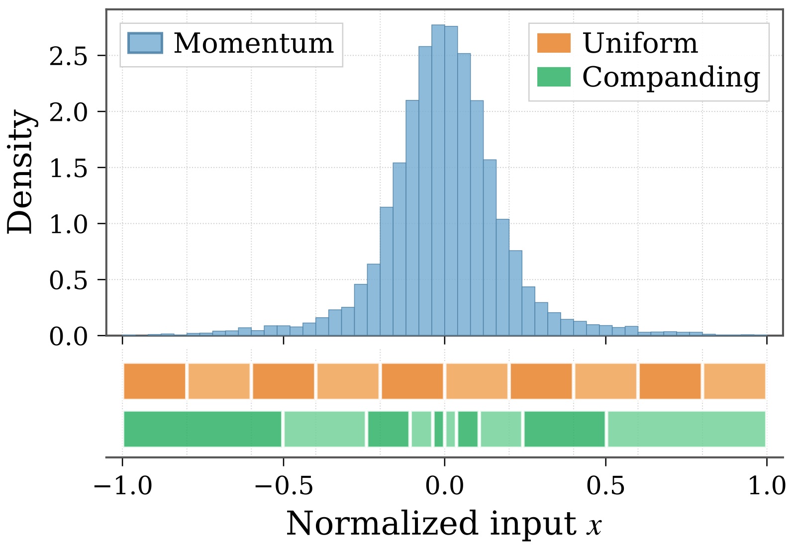
| Gran. | RE↓ Uni. | RE↓ Comp. | CS↑ Uni. | CS↑ Comp. |
|---|---|---|---|---|
| Tensor | 0.509 | 0.238 | 0.879 | 0.973 |
| Row | 0.127 | 0.111 | 0.992 | 0.994 |
| Column | 0.254 | 0.159 | 0.969 | 0.988 |
Pre-training on GPT-2 (Medium / Large) and LLaMA (350M / 1.1B) over FineWeb, all under the standard Muon protocol on A100s. MuonQ4 hugs the Muon32 curve from the first steps, while naive Muon4 never closes its gap.

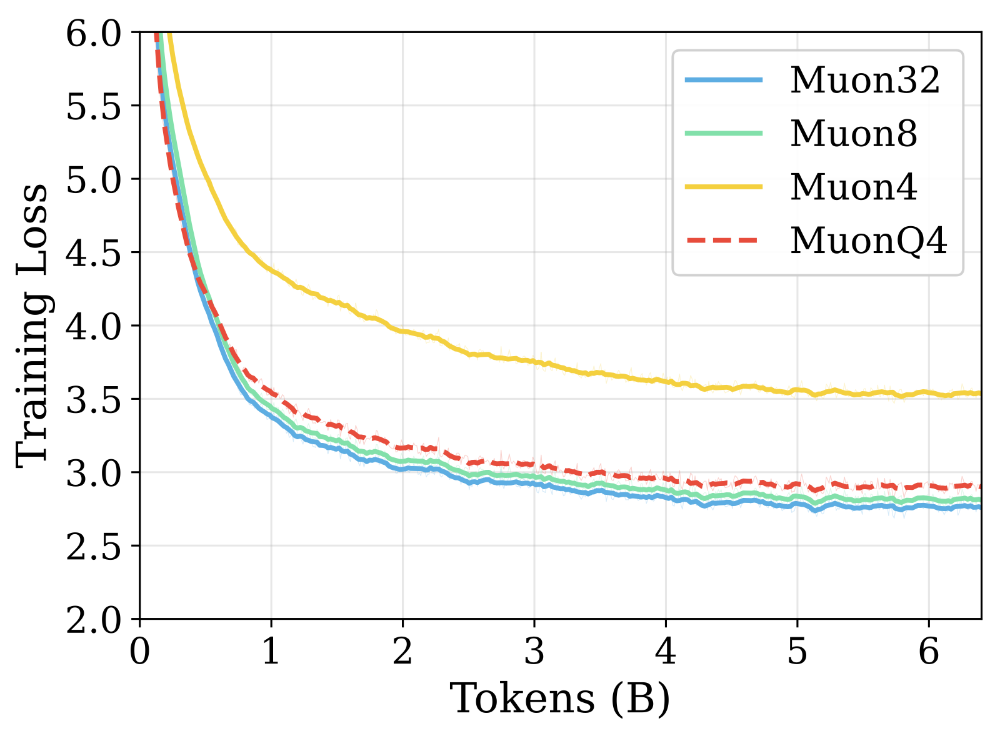
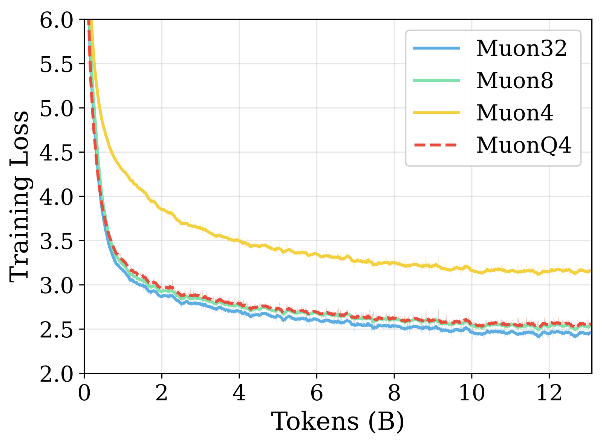
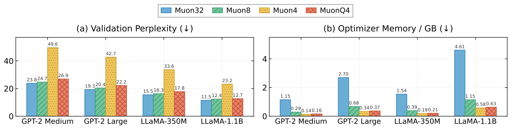
| Model | Opt. | ARC-c | ARC-e | OBQA | BoolQ | HellaS. | PIQA | WinoG. | Avg. |
|---|---|---|---|---|---|---|---|---|---|
| GPT-2 Medium | Muon32 | 23.5 | 39.7 | 27.8 | 57.4 | 33.1 | 65.1 | 51.3 | 42.6 |
| Muon8 | 24.4 | 39.5 | 29.0 | 56.4 | 32.1 | 64.6 | 51.2 | 42.5 | |
| Muon4 | 22.4 | 31.9 | 25.0 | 62.0 | 26.6 | 58.2 | 50.6 | 39.5 | |
| MuonQ4ours | 23.9 | 37.8 | 25.6 | 60.7 | 30.2 | 63.1 | 50.8 | 41.7 | |
| GPT-2 Large | Muon32 | 24.0 | 42.6 | 29.4 | 56.4 | 37.9 | 67.2 | 49.4 | 43.8 |
| Muon8 | 23.7 | 41.0 | 30.0 | 59.8 | 36.2 | 66.7 | 50.1 | 43.9 | |
| Muon4 | 21.1 | 35.1 | 23.4 | 61.8 | 27.5 | 58.2 | 50.0 | 39.6 | |
| MuonQ4ours | 22.8 | 39.8 | 30.2 | 59.8 | 33.8 | 65.2 | 51.5 | 43.3 | |
| LLaMA 350M | Muon32 | 22.6 | 38.5 | 28.4 | 62.0 | 34.3 | 65.7 | 51.9 | 43.3 |
| Muon8 | 22.9 | 38.2 | 27.6 | 61.2 | 32.3 | 63.4 | 53.7 | 42.8 | |
| Muon4 | 21.5 | 29.6 | 25.0 | 61.9 | 27.0 | 55.9 | 50.0 | 38.7 | |
| MuonQ4ours | 22.4 | 38.1 | 27.8 | 60.9 | 31.0 | 63.7 | 51.6 | 42.2 | |
| LLaMA 1.1B | Muon32 | 26.4 | 45.2 | 30.4 | 60.9 | 45.9 | 69.6 | 51.3 | 47.1 |
| Muon8 | 24.4 | 42.3 | 31.4 | 61.3 | 41.2 | 69.6 | 52.2 | 46.1 | |
| Muon4 | 22.2 | 34.1 | 25.6 | 60.3 | 28.5 | 58.7 | 49.6 | 39.8 | |
| MuonQ4ours | 25.0 | 41.8 | 30.4 | 60.7 | 40.3 | 68.3 | 49.9 | 45.2 |
| Method | Val PPL ↓ | Opt. Mem. | Mem. ↓ | Step time | Overhead |
|---|---|---|---|---|---|
| Muon32 | 11.47 | 4.50 GB | 1.00× | 4408 ms | — |
| Muon8 | 12.42 | 1.13 GB | 4.00× | 4434 ms | +0.58% |
| Muon4 | 23.18 | 0.56 GB | 8.00× | 4482 ms | +1.68% |
| GRASP (8/4-bit) | 12.33 | 0.75 GB | 6.02× | 4833 ms | +9.64% |
| MuonQ4ours | 12.67 | 0.62 GB | 7.28× | 4881 ms | +10.72% |
| Method | Compand | Norm | Decomp | PPL ↓ | Mem. ↓ |
|---|---|---|---|---|---|
| Muon32 | — | — | — | 36.4 | 324.0 MB |
| Muon4 | — | — | — | 69.9 | 40.5 MB · 8.0× |
| MuonQ4 | ✓ | ✗ | ✗ | 66.6 ↓3.3 | 40.5 MB · 8.0× |
| MuonQ4 | ✗ | ✓ | ✗ | 50.0 ↓19.9 | 40.5 MB · 8.0× |
| MuonQ4 | ✓ | ✓ | ✗ | 46.2 ↓23.7 | 40.5 MB · 8.0× |
| MuonQ4 | ✗ | ✗ | ✓ | 44.7 ↓25.2 | 44.3 MB · 7.3× |
| MuonQ4full | ✓ | ✓ | ✓ | 40.9 ↓29.0 | 44.3 MB · 7.3× |
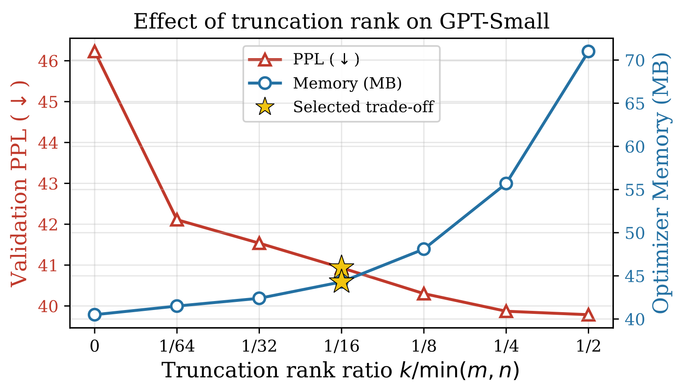
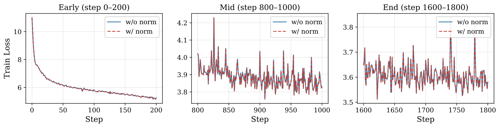
This material is based upon work supported by the U.S. Department of Energy, Office of Science, Office of Advanced Scientific Computing Research, Artificial Intelligence for Science program, under contract DE-SC0025390. This research used resources of the National Energy Research Scientific Computing Center (NERSC), a DOE Office of Science User Facility, under Contract No. DE-AC02-05CH11231, using NERSC awards ASCR-ERCAP0030039 and ALCC-ERCAP0031379.
@inproceedings{su2026muonq,
title = {MuonQ: Enhancing Low-Bit Muon Quantization
via Directional Fidelity Optimization},
author = {Su, Yupeng and Zhang, Ruijie and Liu, Ziyue
and Zhao, Yequan and Zhang, Zheng},
booktitle = {Conference on Language Modeling (CoLM)},
year = {2026},
url = {https://arxiv.org/abs/2605.11396}
}